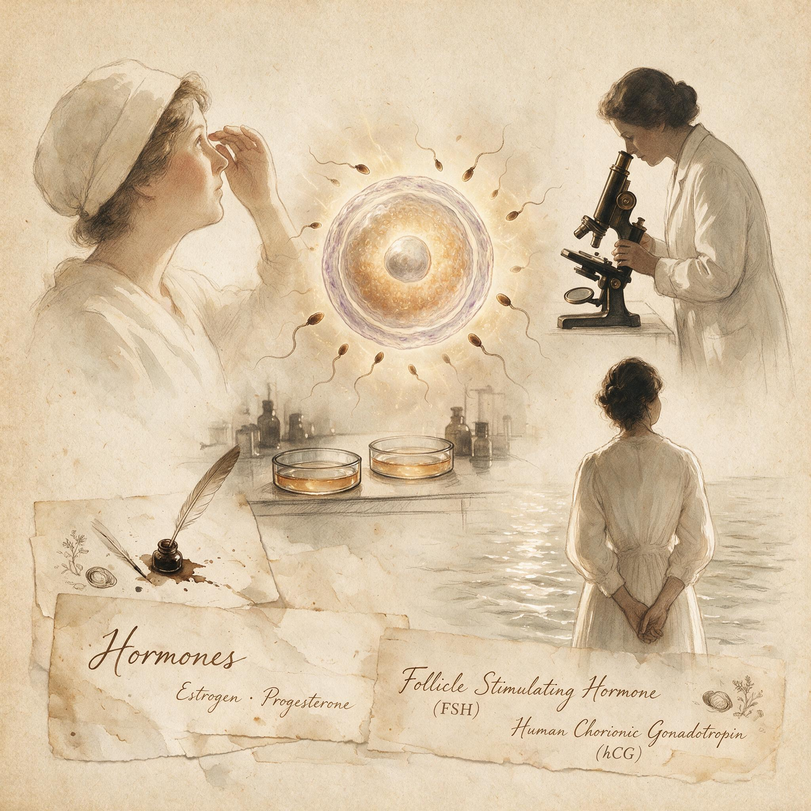

第 8 章
激素的合成拐点
1942年纽约诊所病历备注栏中的那行铅笔字“丈夫不知情”，安静地记录了一个结构性的僵局。物理屏障的标准化使避孕成为可管理的商品，乳胶避孕套从流水线上以每分钟数百只的速度产出，子宫托

激素的合成拐点：历史出版插图
AI 生成插图，非史实影像。
在妇科诊所里被精确测量和适配，但每一次性行为仍然需要临时操作，仍然需要男性配合或医生预先介入，仍然把生育决定权绑定在每一个具体的接触时刻。那个在病历上被注明“满意”的女患者，她的避孕保护仍然建立在隐秘和伪装之上。
而在同一个历史时期，另一条完全不同的工程路径已经在生化实验室中悄然展开，它的目标不是阻挡精子，而是关闭卵巢的排卵功能——把避孕从身体外部搬进身体内部的分子过程。要理解这条路径的起点，需要先回到20世纪20年代的几个并置场景。1921年，奥地利生理学家路德维希·哈伯兰特（Ludwig Haberlandt）在因斯布鲁克的实验室里完成了一项关键实验：他将怀孕兔子的卵巢组织移植到未孕母兔体内，观察到后者停止排卵。
哈伯兰特在实验记录中写道，卵巢中存在某种化学物质，可以在怀孕期间抑制新的排卵。他随后提出一个大胆的假说：如果能够分离这种物质并用于女性，就可以实现“激素绝育”——一种可逆的、不依赖每次性行为操作的避孕方式。同一时期，在大洋彼岸的美国，生物化学家爱德华·多伊西（Edward Doisy）正在圣路易斯大学的实验室里从母猪卵巢中提取一种能诱导大鼠阴道上皮细胞角化的物质。他得到的是一种油状混合物，活性极不稳定，每次纯化尝试都以活性丧失告终。多伊西的研究笔记记录了数十次失败的提取流程，每一步都标注着“活性下降”或“完全失活”。
这两个场景并置在一起，揭示了激素避孕研究最初所处的技术困境。哈伯兰特已经提出了清晰的生理学假说，但缺乏化学手段实现它；多伊西已经掌握了类固醇化学的提取技术，但他的目标不是避孕——他想分离的是雌激素本身，作为一种基础科学成果。这两种知识在20世纪20年代尚未交汇，但它们各自都在推进。
1923年，多伊西的团队终于从数千升母猪尿液中分离出毫克级的活性结晶，确认为雌激素的一种形式——雌酮。1929年，德国化学家阿道夫·布特南特（Adolf Butenandt）独立从怀孕母马尿中分离出雌酮，并在1931年从猪卵巢中分离出雄酮。布特南特的工作建立了一个关键的技术平台：他证明了性激素都属于类固醇家族，具有共同的四环碳骨架结构，可以通过化学修饰改变其生理活性。
这些成果在20世纪20年代末30年代初的学术期刊上逐一发表，但它们在避孕方向上的含义并未立即被认识到。哈伯兰特在1931年的一次学术会议上再次阐述了他的激素避孕假说，但听众的反应冷淡。一位与会者记录道：“哈伯兰特教授的建议在伦理上是可疑的，在技术上是不成熟的。”同一年，哈伯兰特在因斯布鲁克去世，终年45岁。他的讣告着重提到了他在自主神经系统研究上的贡献，对激素避孕假说只字未提。
哈伯兰特的离世并不意味着这条路径的终结，而是标志着一个从个人洞见到系统工程的转变。
20世纪30年代，类固醇化学的进展使得研究者有可能不只是提取天然激素，还可以在实验室中合成和改造它们。1934年，布特南特的团队和瑞士化学家利奥波德·鲁齐卡（Leopold Ružička）的团队几乎同时从胆固醇出发合成了雄酮，这是人类首次实现类固醇激素的完全人工合成。1935年，鲁齐卡因为类固醇和多萜化合物的研究获得诺贝尔化学奖，布特南特因为性激素研究获得同一年的诺贝尔化学奖——但纳粹德国的政治压力使他推迟接受奖项。这些诺贝尔奖的授予标志着性激素研究已经从前沿探索进入主流学术体系，也意味着制药工业开始严肃对待这类分子的商业潜力。
但天然雌激素和孕激素在临床应用上仍然面临两个根本性的技术障碍。第一个是成本问题。雌激素最初从怀孕母马尿中提取，孕激素则从动物卵巢或人类胎盘中获取。1934年，美国生物化学家罗素·马克（Russell Marker）在宾夕法尼亚州立大学的实验室里计算过：从猪卵巢中提取一毫克孕酮需要处理约2500头母猪的卵巢组织，成本高到不可能用于任何大规模临床应用。马克的笔记本上留下了这一计算的过程，旁边有一行批注：“必须找到植物来源。”
马克是类固醇化学史上一个特立独行的人物。他博士毕业于马里兰大学，此后在洛克菲勒研究所从事短暂研究，但因为发表策略上的分歧与学术雇主决裂。1938年他加入宾夕法尼亚州立大学时，研究方向已经从学术基础上转向了实用化学。他相信植物界一定存在可以转化为性激素的类固醇前体，只需要找到合适的物种和合适的转化路线。
1939年到1942年间，马克在墨西哥和中美洲的热带丛林中采集了数百种植物样本，逐一测试其中是否含有所需的甾体皂苷。这期间他跑了大概4万英里的路程，大部分是在没有铺装的土路上。他的野外笔记本记录了采样地点、植物形态描述和简单的化学测试结果。1942年春天，他在韦拉克鲁斯州山区找到了一种当地叫做“巴巴斯科”（barbasco）的薯蓣属植物（Dioscorea composita），它的块茎切开后含有大量的薯蓣皂苷——一种可以被化学降解转化为孕激素的类固醇。马克当场做了初步提取测试，操作记录显示，他使用了简易的提取装置和酒精，得到一个白色沉淀物。他在笔记本里写下：“这条路线可行。”
1943年，马克从宾夕法尼亚州立大学辞职，回到墨西哥城，在一间租来的仓库里搭起了中试规模的提取装置。他改进过的提取流程可以在几周内从巴巴斯科块茎中生产出公斤级的薯蓣皂苷，然后通过四步化学反应——乙酰化、氧化、水解和降解——转化为去氢表雄酮，再进一步转化为孕酮。这个流程的关键在于，它绕过了动物来源的稀缺性，使得孕酮的价格从每克数千美元暴跌到每克几美元。
1944年，马克在墨西哥城注册成立了Syntex公司（Síntesis Esteroides），专事激素合成。公司的第一批产品是天然孕酮和睾酮，主要客户是制药公司，用途集中在妇科疾病治疗——月经过多、习惯性流产、子宫内膜异位症——而不是避孕。Syntex的最早出货记录显示，孕酮销售对象主要是美国和欧洲的医院药房，处方用途栏里填写的内容几乎都与治疗有关。马克本人在1944年底与Syntex的其他合伙人发生激烈冲突后离开了公司，带走了他自创的另一套降解流程的秘密。
此后他在墨西哥单独开办了一家小型激素工厂，但Syntex的化学家团队已经掌握了他留下的核心工艺，并在1945年之后继续开发新的合成路径。1948年，Syntex雇佣了一名刚从哥伦比亚大学医学院毕业的年轻化学家，名叫卡尔·杰拉西（Carl Djerassi）。杰拉西在威斯康星大学获得有机化学博士学位，此前在CIBA制药公司有过工业研究经验。他加入Syntex后的首要任务之一就是寻找成本更低的孕激素合成路线，目标分子是合成孕酮和此前从未被合成的去甲孕酮（19-去甲-17α-乙炔基睾酮）——后者是一种在分子结构上被去掉一个碳原子的孕酮类似物。
第二个技术障碍——口服后肝脏代谢失效——正是在这个阶段被集中攻克的。天然孕酮口服后几乎完全失效，原因在于它经过肝脏时被迅速转化为无活性的代谢物。
类固醇化学家们已经知道，在类固醇分子的第17位碳上引入乙炔基（-C≡CH）可以降低肝脏代谢的速度，这一策略在1938年已经由德国化学家汉斯·伊托夫（Hans Inhoffen）应用于雌激素类似物乙炔雌二醇（ethinyl estradiol）的合成。伊托夫的方法是把雌激素分子的一个羟基替换为乙炔基，结果得到的分子在口服后比天然雌激素活性高出数倍。
1938年发表在《自然》杂志上的一篇报告描述了乙炔雌二醇的合成和药理活性，文章结尾谨慎地提到了“可能的口服治疗应用”，但没有提及避孕。这篇论文的作者们显然意识到了雌激素类似物的口服活性意味着什么，但在1938年的学术规范下，他们选择把讨论范围限定在治疗领域。杰拉西和他的同事路易斯·米拉蒙特斯（Luis Miramontes）、乔治·罗森克朗茨（George Rosenkranz）在1950-1951年间多次尝试把乙炔基引入去甲孕酮的分子骨架。
在多次尝试失败后，他们找到了关键反应条件，最终于1951年10月15日成功合成了去甲炔诺酮（norethindrone）——一种口服活性强、成本相对可控的合成孕激素。Syntex的实验室记录保存了这一合成路线的完整信息，包括反应温度、试剂比例和产率计算。米拉蒙特斯作为实际操作的化学家，在这一反应序列中起到了关键作用，他的名字因此在墨西哥的专利文件上排在发明人的第一位。Syntex的专利文件提交于1951年底，但在专利审查期间，美国的G.D. Searle制药公司于1952年初也独立合成了一种结构与去甲炔诺酮相近的孕激素——异炔诺酮（norethynodrel）。Searle公司的化学家弗兰克·科尔顿（Frank Colton）在1952年春天的一项实验中注意到，异炔诺酮在储存过程中会发生部分异构化，转化为活性的异构体。
这一偶然观察后来产生了重要的工业后果：Searle公司围绕着这个分子的稳定化工艺建立了自己的专利壁垒，而Syntex和Searle两家公司围绕去甲炔诺酮系列分子的专利权益展开了多年的法律纠纷。1952年到1956年间的美国专利局文件记录了双方的多轮答辩，争议焦点集中在谁首先完成活性分子的合成以及谁首先公开了完整的合成工艺。
这些专利纠纷的背后是一个正在成型的产业逻辑。孕激素的人工合成和有口服活性的孕激素分子的发现，使得激素避孕在技术上已经初具轮廓：如果外源性孕激素能够通过负反馈机制抑制垂体促性腺激素的分泌，从而抑制排卵，那么口服避孕药在理论上就是可行的。美国生殖生物学家格雷戈里·平卡斯（Gregory Pincus）和马春建（Min Chueh Chang，后以M.C. Chang的名字著称）在1951-1953年间进行的一系列动物实验为这一理论提供了关键的实证支持。
平卡斯在麻省伍斯特的克拉克大学和伍斯特实验生物学基金会都有实验室，后者是一个私人资助的研究机构，给予他在研究方向上的高度自主权。马春建是平卡斯在中国的同乡和早年学生，两人的合作跨越了二十多年。
1951年，平卡斯和马春建在兔子实验中证明，口服孕酮可以抑制排卵；1953年，他们又在兔子和大鼠中验证了多种合成孕激素的排卵抑制效果，其中去甲炔诺酮和异炔诺酮都显示出高度活性。实验记录显示，给予足够剂量的孕激素后，实验动物的卵巢停止释放卵子，组织切片检查确认没有黄体形成。这些实验论文发表在1953-1954年的《科学》和《内分泌学》杂志上，大多数没有在标题或摘要中出现“避孕”一词。平卡斯1953年发表在《科学》上的文章标题是“类固醇对排卵的影响”（The Effects of Steroids on Ovulation），马春建的论文则集中在精子获能和受精机制上。
这种措辞选择是刻意的：在20世纪50年代初的美国，避孕研究仍然面临法律和学术上的严格限制。联邦通信法禁止通过邮政传递避孕材料的信息，马萨诸塞州州法明确禁止已婚夫妇以外的任何人获取避孕药具，而联邦政府在研究资助中对任何涉及“节育”的项目都退避三舍。
但一次关键的私人会面改变了这一研究的资金结构。1950年春天，计划生育联盟（Planned Parenthood Federation of America）的创始人玛格丽特·桑格（Margaret Sanger）在纽约的一次私人晚餐上见到了平卡斯。桑格当时已经年近七旬，她一生推动避孕合法化的努力屡遭挫折——1930年代她在纽约开办的避孕诊所曾被警察突袭关闭，她的出版物多次被邮政部门查扣。桑格对平卡斯说，她寻找一种“女性可以完全控制的、不需要男性知道或配合的”避孕方法，已经寻找了四十年。平卡斯的回答被记录在桑格后来的一封书信中：“他说这在技术上是可能的，但需要资金。”
这次会面之后，桑格开始为平卡斯的研究寻找资金来源。1952年，桑格将平卡斯介绍给了凯瑟琳·麦考密克（Katharine McCormick）——一位继承了国际收割机公司（International Harvester）家族财富的女性慈善家。麦考密克的背景使她对这个项目有特殊的投入：她毕业于麻省理工学院，是该校最早获得生物学学士学位的女性之一，此后长期关注女性生育自主权问题。她的丈夫患有精神分裂症，婚姻在性关系上早已名存实亡，麦考密克本人的财产权因为婚姻法律制度而受到严格限制。她曾经推动避孕研究和堕胎合法化，但收效甚微。
在见到平卡斯之后，麦考密克决定绕过制度障碍，直接用个人支票资助口服避孕药的研制。1953年到1959年间，麦考密克总共向平卡斯提供了超过200万美元的研究经费，按当时美元购买力计算相当于今天的2000万美元以上。她的资助信件大多简短直接，其中一封只写了一行字：“你的工作在进展吗？我寄上下一张支票。”
麦考密克的资金注入使平卡斯得以避开联邦研究资助中“避孕”一词可能带来的审查。他的实验室账目记录显示，这笔私人资助被分别用于设备采购、实验动物购买、化学试剂支付和临床合作者的差旅费报销。更重要的是，这笔资金不受任何机构审查委员会（IRB）的约束——在1950年代，美国尚不存在强制性的IRB机制，临床试验的伦理规范主要依靠研究者的个人判断和所在机构的内部讨论。这为后来的争议埋下了伏笔。
1953年到1954年之间，平卡斯和马春建完成了动物实验阶段的验证工作。他们的数据表明，多种合成孕激素都可以有效抑制兔子的排卵，其中去甲炔诺酮和异炔诺酮在口服后活性最高。平卡斯开始考虑如何把实验从兔子推展到人类。
他在1953年秋天给麦考密克的一封信中写道：“动物数据是清楚的。下一步需要找到愿意合作进行人类试验的临床医生。”这封信里没有提及试验对象的知情同意问题，也没有详细讨论人类试验可能面临的伦理审查。
平卡斯不是一个对伦理问题无知的人——他早年因为在哈佛大学的兔卵体外受精研究中涉及伦理争议而被迫中断学术生涯——但在激素避孕研究中，他显然把推进技术放在了程序性伦理之前。1954年，平卡斯联系了波士顿的妇产科医生约翰·洛克（John Rock）。洛克是一个身份矛盾的人物：他是哈佛大学医学院的教授，同时也是虔诚的天主教徒，毕生维持着信仰与生育控制之间的艰难平衡。
洛克在波士顿的私人诊所接诊了大量因不孕症求医的患者，他的研究方向之一是用激素治疗导致不孕的妇科疾病。1953年，洛克已经在自己的患者中使用过Searle公司提供的孕激素进行治疗性实验——他给患有多囊卵巢综合征和子宫内膜异位症的女性服用激素，观察到在持续服药期间这些患者不排卵。洛克给这些实验取了一个治疗性的名称：“激素假孕”（hormonal pseudopregnancy）。他在1953年的一篇临床报告中描述道：“给予外源性孕激素后，子宫内膜进入分泌期变化，排卵被抑制。”
但他在结论中只提到了这对治疗不孕症可能有用——他的逻辑是，如果用药后卵巢暂时休眠，停药后会有“反弹排卵效应”，可能增加怀孕概率。
平卡斯和洛克的合作在1954年正式建立。洛克负责在哈佛医学院附属医院和波士顿利文斯顿州立医院招募临床试验对象，平卡斯负责提供药物和设计试验方案。最初的试验设计围绕异炔诺酮和去甲炔诺酮展开，目标剂量需要调整到既能抑制排卵又不引起严重副作用的范围。最早的试验对象包括洛克诊所的不孕症患者，也包括同意参与测试的护士和医学院学生——后一群体大多属于有医学知识、自愿参与的受试者，因此能够提供相对规范的反馈。
但将试验扩展到更大样本时，受试对象的构成发生了重要的偏移。平卡斯和洛克意识到，美国各州的反避孕法律使得招募本地受试者面临法律风险，特别是在已婚妇女中测试一种已知会抑制排卵的药物可能被解释为蓄意节育。马萨诸塞州的法律尤其严格，任何向已婚妇女提供避孕手段的行为都属于刑事犯罪。
在这个制度夹缝中，平卡斯将目光投向了美国的海外领土——波多黎各。波多黎各在20世纪50年代的人口状况使它在全球范围内成为一个特殊的案例。
这个加勒比岛屿的面积只有约9100平方公里，但人口密度在1950年已经接近每平方公里500人，是美国的十倍以上。工业化尚未充分发展，农业土地压力巨大，岛上的出生率常年维持在每千人40人以上，而婴儿死亡率的快速下降使得人口净增长进一步加速。1940年代到1950年代之间，波多黎各政府在美国的资金和技术支持下推行了大规模的工业化计划生育项目，包括推广绝育手术——到1950年代中期，波多黎各超过三分之一的育龄妇女已经接受了输卵管结扎，这一比例当时在全世界无出其右。
在这个背景下，激素避孕的临床试验被当地卫生部门视为可以接受的公共卫生行为，而不是可能引发政治丑闻的节育宣传。
平卡斯在1955年写给波多黎各大学医学院的合作者埃德里斯·赖斯-瑞（Edris Rice-Wray）的一封信中，明确表达了选择波多黎各作为试验地点的逻辑。这封信的副本保存在平卡斯的档案馆中，主要讨论了波多黎各的法律环境——“没有针对避孕措施的禁令”——和赖斯-瑞在当地已经建立的社区卫生网络——她负责运营波多黎各计划生育计划下的多个诊所。平卡斯计划通过这些诊所招募试验对象，药物由Searle公司免费提供，试验目标是跟踪用药一年的排卵抑制效果和副作用。
1956年春天，赖斯-瑞在波多黎各首都圣胡安市郊的里奥彼德拉斯（Río Piedras）社区诊所开始了第一批试验。受试者是一组低收入育龄妇女，大多数已经生育过多个子女。赖斯-瑞的原始试验记录被部分公开：她为每个受试者建立了档案，记录服药情况、副作用报告和月经周期变化。第一批受试者的服药方案是异炔诺酮，每日口服一次，连续服用20天后停药8天，模拟月经周期。
赖斯-瑞的报告显示，服药期间没有发生怀孕，但副作用相当普遍：恶心、头痛、体重增加、乳房胀痛和突破性出血是最常见的投诉。一些受试者因为无法忍受副作用而退出试验。赖斯-瑞在1956年秋天给平卡斯的一封信中提到：“有些妇女抱怨说，她们宁愿怀孕也不愿意整天恶心。”这封信的措辞显示，赖斯-瑞作为一个基层临床医生，对于试验对象的个体痛苦体验有着比平卡斯更直接的感受。
但试验仍在扩大。1957年，赖斯-瑞和平卡斯在波多黎各增设了第二个试验点，并在邻近的维尔京群岛也开始了小规模测试。到1958年底，已经有超过1300名妇女在波多黎各试验中服用了至少一个周期的孕激素类药物，其中265名妇女完成了连续12个月以上的服药记录。数据显示试验药物在抑制排卵方面完全有效——在正确服药的情况下，没有发生任何怀孕——但副作用的报告率持续在高位，部分受试者出现了肝功能异常的实验室指标，这些指标在当时没有被深入追踪研究。
赖斯-瑞在1958年的一份中期报告中建议降低剂量以减轻副作用，平卡斯同意调整方案，但并未暂停试验或建议受试者退出。试验对象的知情同意状况是后来最受争议的问题。研究者是否向受试者说明，她们正在服用一种尚未被美国食品药品管理局（FDA）批准的试验药物？她们是否被告知，服药的主要目的是观察避孕效果而不是治疗疾病？她们是否被明确告知可能的副作用？
现有的证据——包括赖斯-瑞的诊所记录、平卡斯的通信和受试者签署的登记表格——显示这些信息的传递是有限的、不系统的，且因诊所而异。登记表格上记录了受试者的年龄、生育史和服药前后的生理指标，但没有相当于现代知情同意书的文件。赖斯-瑞在1960年代的一次采访中说：“我们告诉她们这是一种防止怀孕的药物，她们理解这一点。其他的事情——分子结构、激素机制——她们不需要知道。”
这个解释指向了一个结构性的伦理困境：在1950年代中期，美国的临床试验规范尚在形成之中，受试者保护机制几乎完全缺失，而跨国试验——由大陆研究者主导，在殖民领土上执行，受试者为低收入少数族裔妇女——使得责任归属更加模糊。1964年，世界医学协会通过了《赫尔辛基宣言》（Declaration of Helsinki），首次系统规定了人体试验的伦理原则，包括必须取得“自愿而知情的同意”。但当这些原则正式成文时，波多黎各的激素避孕试验已经结束了六年。
1957年，美国食品药品管理局批准了异炔诺酮的上市申请，但批准适应症最初不是用于避孕，而是用于治疗月经不调和不孕症。Searle公司以Enovid的商品名销售这种药物，处方说明书里列举的适应症完全围绕妇科治疗，没有提及排卵抑制或避孕用途。这符合1950年代美国社会的法律和道德生态：卖一种“治疗妇科疾病”的激素药物是可以接受的，卖一种“防止怀孕”的药物则可能触犯联邦和州两级的多项法律。
然而，临床医生很快就发现Enovid的治疗说明书与实际处方行为之间出现了巨大差值——医生把这种药物开给需要避孕的妇女，凭借的是药物抑制排卵这一已知但未在说明书中标注的药理效应。1958年，美国医学协会会刊刊登了一篇对Enovid的评论文章，指出“这种药物在临床应用中的一个重要方面——避孕——在正式的适应症清单中被刻意回避了”。文章的措辞克制，但指向了一个明确的现实：口服避孕药已经在美国本土进入了医疗实践，而监管机构、制药公司和医学专业之间围绕这种用途形成了一种心照不宣的操作规范。
这种操作规范内部的尴尬在1959年达到了一个集中显露的时刻。那一年，Searle公司向FDA提交了一份补充申请，请求将Enovid的适应症从妇科治疗扩展到“口服避孕”。提交的材料包含波多黎各临床试验的数据、洛克在波士顿的观察报告和其他多个小规模研究的结果。
FDA的审查人员注意到试验数据中的副作用报告，包括受试者出现的恶心、突破性出血和肝功能异常指标，但他们也看到药物在抑制排卵方面的完全有效性。1957年到1959年之间担任FDA局长的是乔治·P·拉里克（George P. Larrick），他在任内经历过多次重大药品安全事件，包括磺胺酏剂致死事件和沙利度胺危机拉响之前的预警。
拉里克的审阅意见没有保留在档案中，但FDA审批文件显示了一个值得注意的程序：1960年5月9日，FDA正式批准Enovid的避孕用途，但批准的用药期限被限制为最多连续两年，理由是缺乏长期安全性数据。这一限制条款被写在了药品说明书中，但在实际处方中几乎没有约束力——医生可以在下一个两年期开始时重新开具处方。从哈伯兰特1921年的第一份兔卵巢移植记录，到1960年FDA批准Enovid上市，整整经过了39年。
在这39年里，一个原本处于学术边缘的大胆假说，经过了类固醇化学、植物化学、制药工业、私人基金会资金、跨国临床试验和联邦监管程序的接续作用，最终变成了一种可以工业生产、由医生开处方、在药房凭处方购买的标准化药品。这个过程的每一步都嵌入在更大的社会结构之中：没有1931年诺贝尔化学奖激励下的类固醇骨架研究，就没有后续的分子改造路径；
没有罗素·马克在墨西哥丛林中的薯蓣皂苷采集，就没有公斤级的孕激素量产；没有麦考密克家族从国际收割机公司积累的财富，就没有平卡斯实验室的独立运作；没有波多黎各的人口压力和相对宽松的法律环境，就没有大规模人类试验的可操作地点；而如果没有洛克作为一个哈佛教授兼天主教徒提供的专业权威和社会掩护，口服避孕药在美国本土的接受度将显著降低。这些条件中，没有一个条件本身足以催生激素避孕药。
只有当它们被特定的技术路线——从研究排卵抑制机理，到合成口服活性孕激素分子，再到组织受试者群体——连接成一个整体时，一种新的避孕工程才得以完成。在这一工程中，避孕的边界从避孕套生产线的末端、从子宫托的硅胶模具、从每一次性行为前的临时操作，推进到了卵巢功能的分子开关。但这一工程也将避孕中的伦理问题，从知识考古的层面和个体知情层面，带到了一个全新的位置。
在波多黎各里奥彼德拉斯诊所的档案中，有一份封存至今的受试者登记表。登记表的印刷部分是西班牙文，表格上方写着“计划生育计划——药物登记”，表格内容包括受试者姓名、年龄、子女数量、既往生育史和服药日期。在用钢笔填写的一项项记录中，没有一处地方出现“试验”或“研究”字样，也没有一处地方显示签署这份表格的女性被告知，她们正在服用的药物尚未在美国上市，其长期影响尚未被全面了解。
表格的最后一栏是“观察备注”，由诊所护士填写。其中一份表格的备注栏里写着：“患者报告恶心，拒绝继续服药。”下一行的日期标注是1956年11月17日。这位停止服药的妇女的姓名没有出现在后续试验的任何一次随访记录中。
这份登记表与1942年纽约诊所那份写着“丈夫不知情”的病历，相隔只有14年。纽约的妇女在使用医生秘密适配的子宫托，波多黎各的妇女在服用尚未获批的激素药物，她们各自的生育命运由两个不同的工程逻辑所定义，但又共享着同一个隐默的前提：女性不能公开控制自己的生育能力，即使拥有这一知识的技术手段已经抵达了她们的子宫托橡皮碗或每日服药的小塑料瓶。由此进入的是第九章的故事：药物已经被发明和验证，但它只是一切问题的开始，此后需要决定的是谁可以合法获得它，谁支付它的价格，谁为副作用承担责任，以及谁有权决定以上所有问题。